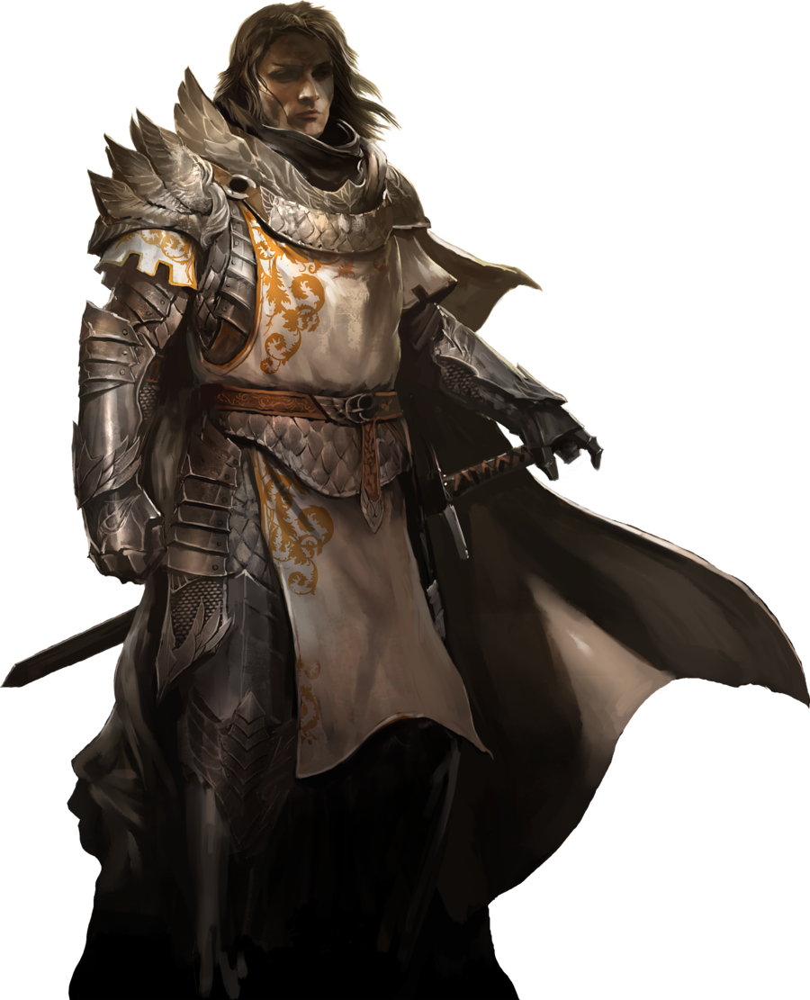
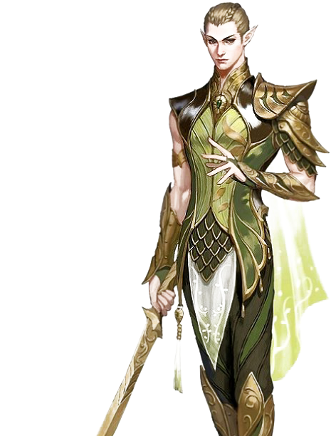
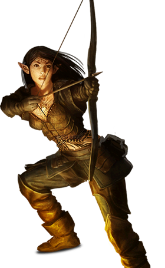
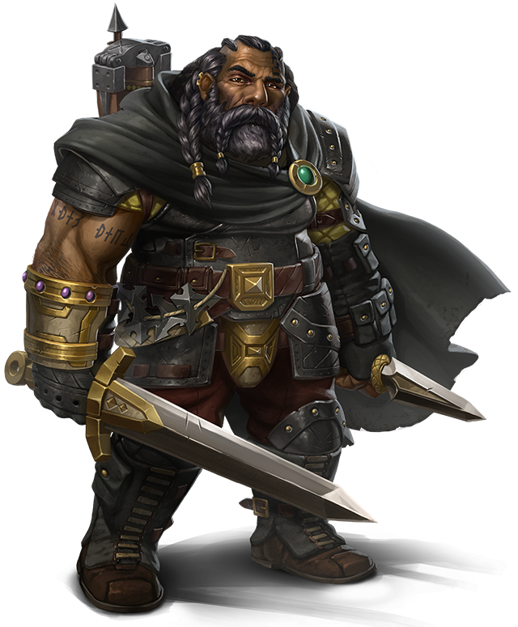
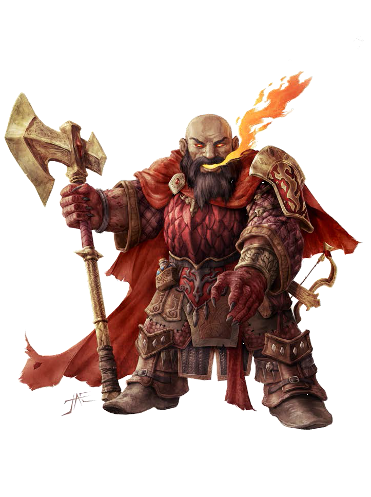

Humanos

La raza humana no destaca en absolutamente nada. Están, en general, dentro de la media en todo. Eso les permite abarcar la mayoría de disciplinas con cierta soltura. Son, en ese aspecto, una raza sin fortalezas ni flaquezas. La mayoría de humanos se organiza en reinos aunque se conocen aldeas y tribus independientes que no suelen durar más de 20 o 30 años antes de desaparecer por una u otra razón.
En la guerra los humanos son disciplinados, se organizan en grandes ejercitos y usan todo tipo de armamento, técnicas y estrategias, lo que les convierte en enemigos altamente adaptables
Elfos solares

Los elfos solares son altos y esbeltos, su pelo tiene tonalidades claras como su piel. Sus procesos biológicos son mucho más lentos que los de otras razas, lo que les hace particularmente resistentes a venenos y al paso del tiempo, llegando a alcanzar en algunos casos los 200 años de edad. Por otro lado, esto mismo les vuelve débiles a las enfermedades y las heridas físicas.
Los elfos solares tienen un don para las artes arcanas, son verdaderos estudiosos con grandes capacidades innatas y lo reflejan en su forma de combatir y afrontar las guerras.
Elfos lunares

Los elfos lunares poseen un físico más robusto que los elfos solares, son veloces, diestros y sutiles. Son facilmente diferenciables de éstos por su pelo, de tonalidades oscuras y rara vez pelirrojo. Son una raza en comunión con la naturaleza y se hace especialmente evidente en el uso de su magia normalmente relacionada con la vida, las plantas o los animales.
Se organizan en aldeas cerca de bosques, junglas o pantanos, normalmente ocultas por hechizos o por la vegetación en sí. Los elfos lunares han sido tradicionalmente muy territoriales, para el resto de razas adentrarse en algunas zonas controladas por los elfos lunares es sinónimo de suicidio, llegando a convertirse en verdaderos obstaculos infranqueables.
Enanos del Hierro

Enanos del Rubí
